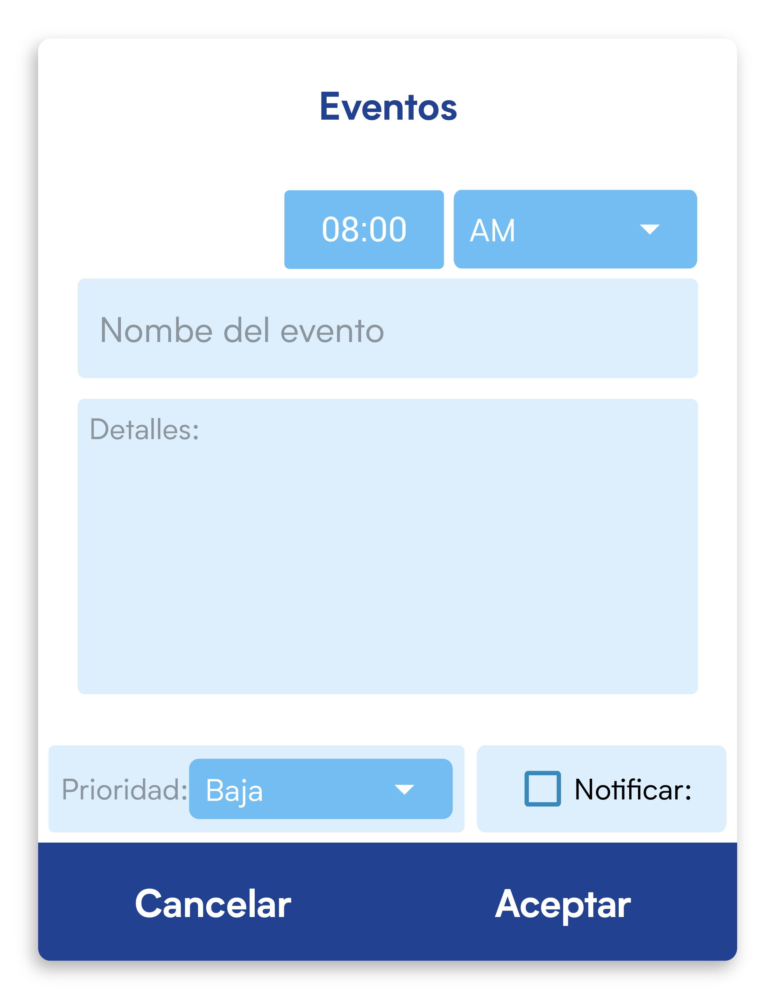

Eventos.
Es la segunda página mostrada en la aplicación, tiene como objetivo crear recordatorios para eventos importantes como reuniones o fechas significativas.

¿Cómo crear nuevos eventos?
Puedes agregar nuevos eventos al calendario y elegir el nivel de importancia que tiene cada uno, así como elegir entre ser notificados o no.
Del mismo modo en el que creas nuevos turnos de clase para el horario, debes clickear el botón flotante de la esquina inferior derecha de la pantalla, aparecerá también un diálogo flotante con opciones que deberás completar, ten en cuenta que primero deberás seleccionar el día en concreto en el que vas a colocar el evento en sí, para desplazarte por los meses del año utiliza las flechas de izquierda y derecha que se encuentran en el calendario.

- Hora (opcional). momento en el que se supone que comienza el evento en cuestión, si determinas que el evento debe notificarte, deberás elegir la hora específica en la que aparecerá la notificación.
- Nombre del evento (opcional si agregas detalles). Ej Revisión de documentación.
- Detalles (opcional si agregas un nombre). Algunos detalles adicionales que crees que deba tener el evento. por ejemplo el lugar donde se va a desarrollar una reunión importante.
- Prioridad (opcional). Prioridad que determines que deba tener el evento dependiendo de su importancia, puedes elegir entre tres prioridades, Baja, Media o Alta, el evento aparecerá con un punto de color verde si la prioridad es baja, azul si es media o rojo si es alta.
- Notificar. Marca esta casilla si crees que el evento debe disparar una notificación en su dispositivo al llegar la hora determinada, el sonido de la alarma de notificación dependerá de como esté configurado en su dispositivo.
- Aceptar. por último clickea el botón aceptar y si has completado todos los campos obligatorios verás aparecer un punto del color de la prioridad que hayas elegido en el calendario, si clickeas el día donde se encuentra ese punto verás detalles de los eventos que ocurren en ese día en concreto.
¿Cómo eliminar un evento?
- Selecciona el día en el que transcurre el evento
- Debajo en donde aparecen los datos del mismo: mantén presionado un click y aparecerá un pequeño diálogo con la opción Eliminar, si clickeas dicha opción se eliminará inmediatamente el evento y su respectiva notificación se eliminará del sistema si estaba marcada esta opción.